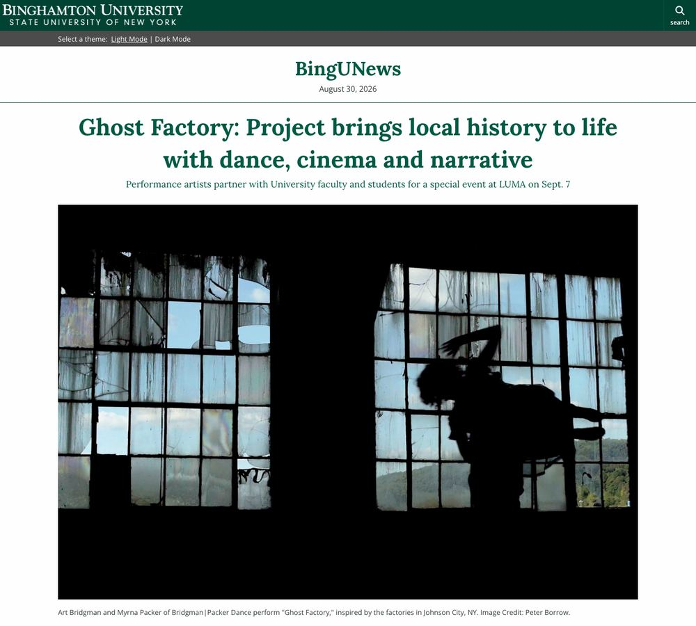
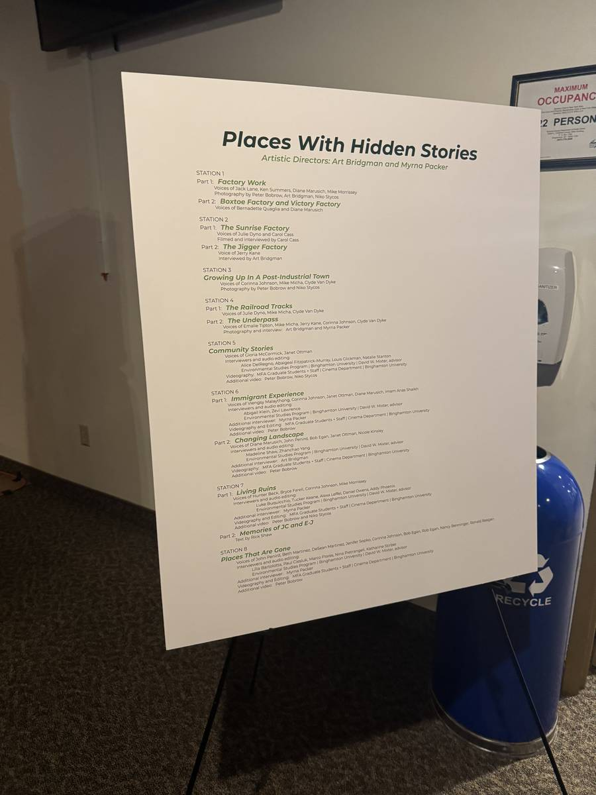
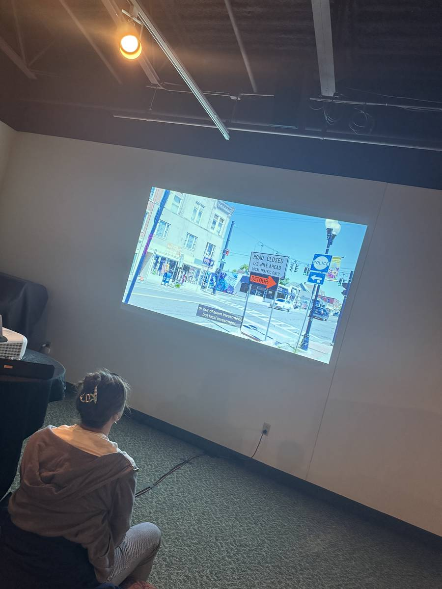
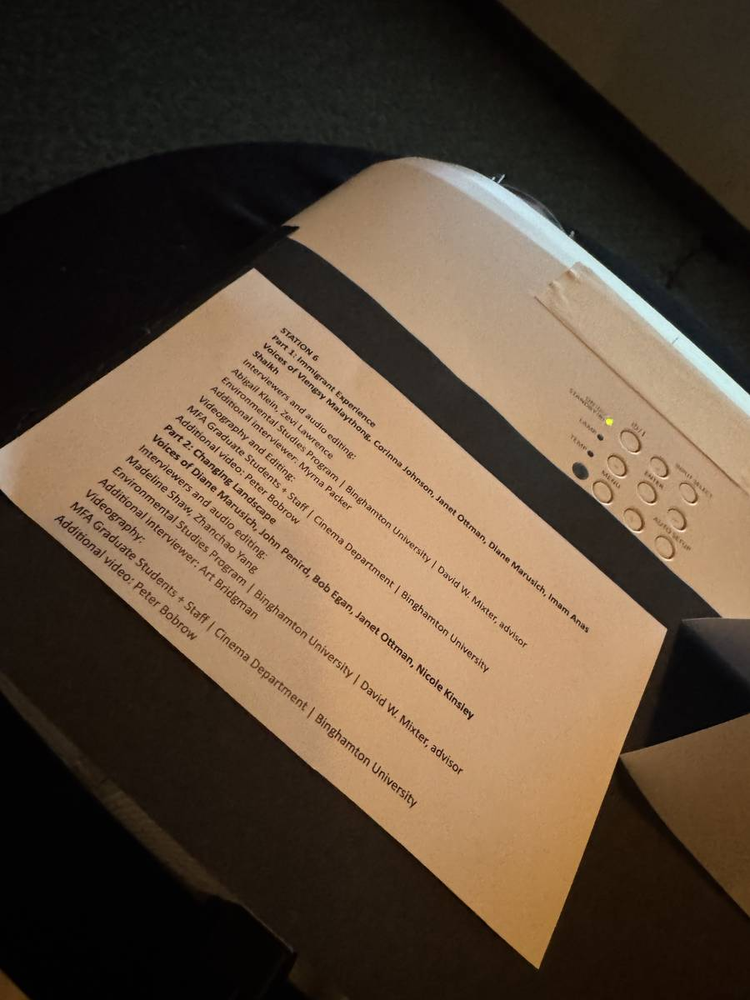
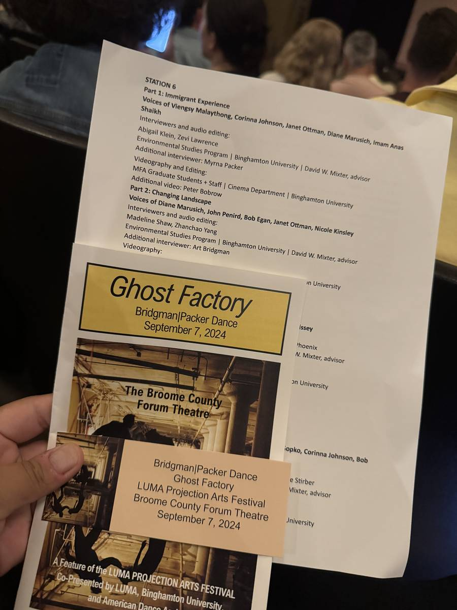

Community-Engaged Research Installation · Still touring
Places with Hidden Stories
Oral history, industrial memory, and community storytelling in Johnson City, New York.
A village shaped by the rise and fall of the Endicott Johnson Shoe Company still carries that history in its buildings. This project asked residents what those buildings mean to them — and turned their answers into an audiovisual installation rather than a paper.
Eight listening stations, thirty-odd voices. Each one attached to a specific building, corner, or set of railroad tracks in Johnson City.
Reading a City Through Memory
The same block, remembered four different ways
Johnson City's industrial history is still visible in its built environment. For most of the twentieth century, the Endicott Johnson Shoe Company shaped the village through factories, worker housing, employment, and community institutions.
Industrial decline left a different landscape behind: former factories, repurposed buildings, vacant lots, and neighborhoods absorbing decades of economic and demographic change. Those physical traces tell part of the story. They do not tell the rest of it.
So the project worked the other way around. We interviewed long-time residents about factory work, childhood, neighborhood life, community institutions, industrial decline, redevelopment, and the changing identity of the village. The goal was never a single authoritative history. It was to preserve the different ways people remember the same place.
As the project's name suggests, a familiar building can hold stories that are invisible to anyone simply passing through it.
What the landscape records
The evidence a planner can pull from a database.
- Parcels, land use, and zoning designations
- Vacancy, tenure, and assessed value
- Employment loss and industry mix over time
- Redevelopment sites and public investment
- Demographic change by census tract
What residents remember
The evidence that only exists if someone is asked.
- A first shift on the factory floor
- Which underpass you were allowed to walk through
- The store that anchored a block before it closed
- Whether new investment feels local or imported
- What a building was, long after it stopped being it
My Work
Interviewing, listening, and finding the through-lines
- Interviewed long-time residents and former Endicott Johnson workers.
- Edited the audio and traced the themes linking individual memories to changes in the landscape.
- Worked with the Cinema program to pair those recordings with footage of the places residents described.
Most of my work starts with spatial data. This one started with what people remembered — and kept opening onto questions larger than industrial history: how residents read neighborhood change, and how the university's expanding presence was becoming part of Johnson City's identity.
The Piece
Changing Landscapes
The short film my group produced for the installation. Five residents describe what has changed in Johnson City, over footage of the streets they are talking about.
Loads from YouTube only after you press play. Watch on YouTube ↗
From Interviews to Public History
Eight stations, built out of what people said
The oral histories became Places with Hidden Stories, an audiovisual installation accompanying Bridgman|Packer Dance's Ghost Factory. Each station pairs excerpts from the interviews with contemporary footage, so a story stays attached to the street, building, factory, or house it is about.
In September 2024 the installation ran at the LUMA Projection Arts Festival in Binghamton, before and after a regional performance of Ghost Factory at the Broome County Forum Theatre. Interviews that began as an academic project became something an audience walked through.
Part 1Factory Work
Part 2Boxtoe Factory and Victory Factory
Part 1The Sunrise Factory
Part 2The Jigger Factory
Growing Up in a Post-Industrial Town
Part 1The Railroad Tracks
Part 2The Underpass
Community Stories
Part 1Immigrant Experience
Part 2Changing Landscape My station
Part 1Living Ruins
Part 2Memories of JC and E-J
Places That Are Gone
Artistic directors: Art Bridgman and Myrna Packer. Stations were built by student teams across Environmental Studies, Cinema, and Anthropology at Binghamton University.

BingUNews · Binghamton University Ghost Factory: Project brings local history to life with dance, cinema and narrative The university's own account of the collaboration — how the performance, the student interviews, and the installation came together for LUMA. By Jennifer Micale · August 19, 2024 Read the featureLocal coverage
From the Installation
September 7, 2024 — Broome County Forum Theatre
Photographs from the reception hall, where the eight stations ran before and after the performance.




Ghost Factory
The performance this project grew out of
The project developed alongside Ghost Factory, a multimedia performance by Art Bridgman and Myrna Packer of Bridgman|Packer Dance.
Its origins are local. While performing in Johnson City in 2018, Bridgman and Packer noticed the village's enormous former factory buildings and started asking about the people behind them. They went on to interview residents and film inside the empty industrial spaces. Those materials became Ghost Factory, which premiered in 2021.
The performance sets live dance against projected video, recorded voices, and footage shot inside the factories. Rather than narrating industrialization and decline, it works from fragments of individual experience to evoke the lives those spaces held.
Places with Hidden Stories extends that idea through oral history. The installation gives residents room to tell longer and more direct versions of the same story.

A Project That Keeps Travelling
Johnson City became the starting point, not the subject
The work did not end when it came back to Johnson City in 2024. Bridgman|Packer continue to tour Ghost Factory together with Places with Hidden Stories, and as the production travels the installation takes on oral histories collected in each host community while keeping the Johnson City stories.
So Johnson City's experience now opens conversations in other places shaped by factory work, closures, neighborhood change, and community memory. Current and upcoming presentations are listed on the Bridgman|Packer performance calendar.
Reflection
What the project changed for me
A former factory can be described as a parcel, a redevelopment site, or evidence of economic restructuring. Each description is accurate. None of them holds everything the place means to the people who lived it.
For one resident the building is a former workplace. For another it is part of a childhood landscape. For someone younger it was always the abandoned building on the corner. For a recent arrival it is a development site with no particular past. Oral history is what makes those layers visible at the same time.
The built environment is not only a physical record of urban change. It is also a repository of memory.
This project sits next to the quantitative work rather than apart from it. Both are asking how people experience a changing city.